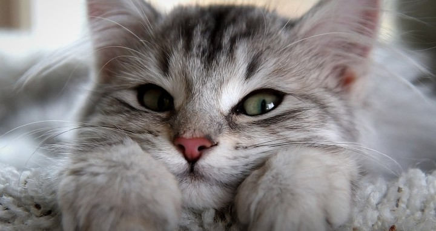

Большинство животных с целью выживания объединяются в группы по особи своего вида. Взаимоотношения "общественных" животных достигают высокого уровня сложности и характеризуются своими нормами сожительства, высокоразвитым инстинктивными реакциями на формы поведения и системами сигнализации для передачи информации (их условно называют "язык" животных). Чем лучше развит тот или иной орган чувств, тем чаще животное прибегает к нему для передачи информации.
Cамый распространенный, поскольку им до сих пор пользуются животные, которые раньше других появились на Земле. Ароматными веществами замечают свои тропинки муравьи. Пчелы-разведчики, найдя пищу, просачивают своим запахом воздух и окружающие предметы, чтобы рабочие пчелы могли быстро и безошибочно найти дорогу к кормушке.
Огромное значение имеет запах для встречи самцов и самок многих бабочек, насекомых, пауков. У млекопитающих пахучие железы бывают расположены на различных частях тела. Антилопы обозначают ветки деревьев и кустарников, расположенных на границе их участка, выделениями придаточной железы. Медведи оставляют след на деревьях и камнях когтями и спиной, у кошек и собак для этой цели служит моча.
Язык запахов очень важен для многих животных-охотников. Собака и его родственники находят добычу главным образом благодаря органам чувств. Расстояние, на котором собака может слышать запах дичи, в первую очередь зависит от направления и силы ветра и влажности почвы. Из диких животных хорошим чутьем обладают волк, шакал, лисица.
Звуковой код животных очень разнообразен. Чаще всего мы слышим "птичий разговор". Надо разграничивать песню птиц и сигналы, которые они подают в разных случаях жизни. Звуки могут иметь разное значение в зависимости от тональности. Например, у домашних гусей звуки "га-га-га" означают призыв идти быстрее, "га-га-га-га-га-га" - "останавливаемся здесь"; короткое урывчатое гоготание - сигнал тревоги; громкое гоготание, переходящее в тихое, едва слышное, показывает, что птицы довольны. Разгневанные гуси шипят и вытаскивают шею вперед. Петь птицы учатся у родственников. Зяблик или канарейки, которые выросли в одиночестве и не слышали песни старших птиц, никогда не будут правильно петь.
"Язык" зверей состоит из немногих "слов", которыми передаются удовольствие, страх, ужас, ярость, переход в нападение и другие эмоциональные состояния.
Животные, которые живут группировками, разговорчивее от одиночек, ведь им есть о чем "поговорить" друг с другом.
Редко звуковой сигнал животных не сопровождается какими то жестами. А иногда "немой разговор" понятен и без каких-либо "слов".
Пчелы-разведчики передают информацию так: прилетев к улью, пчела на сотах делает быстрые круговые движения и одновременно крутит телом. Если корм совсем близко от улья, то она описывает кривые, близкие к букве О, а если дальше - то похожи на восьмерку. Ритм танца и частота прокручиваний телом дают знать другим членам семьи, как далеко до корма и много ли его. Направление определяется по углу наклона оси описываемых фигур относительно вертикали. Этот угол соответствует углу между направлением на солнце и на источник корма.
Разнообразными являются жесты, движения и позы птиц в брачный период. Некоторые птицы преподносят друг другу подарки (рыба, водоросли, ягоды, веточки), имеющие символическое значение. При этом они принимают различные позы. Иногда птицы, отпугивая врага, становятся в угрожающую позу. Индюк растопыривает перья и распускает веером хвост. Во время потасовки некоторые птицы могут сказать "я сдаюсь". Победитель, если одного и того же вида с побежденным, никогда его не коснется. Галка в таком случае приседает, выгибает шею и, отвернувши голову от победителя, подставляет ему затылок, одно из самых уязвимых мест у птиц. Распластанной позы с вытянутой вперед шеей принимает побежденная чайка.
С помощью цветов животные прячутся от врага, пугают его, маскируются, подкрадываясь к добыче, "говорят".
Самого яркого окраса набирают много птиц и рыб в брачный период, хотя однозначного объяснения этому явлению нет: одни ученые считают, что яркая окраска самца нужна, чтобы "пленить" самок, другие думают, что это турнирное оружие, которое отпугивает соперника, или просто распознавательный признак . То, что окраска может служить "удостоверением личности", неопровержимо. Только что вылупленные птенцы чайки показывали разную реакцию на макет головы матери, вырезанной из картона. Если клюв такой картонной модели будет желтый с красным пятном на конце, как у настоящей чайки, то он вызовет резкую просительную реакцию птенцов. А когда клюв будет без красного пятна, то реакция окажется втрое слабой.
Разнообразные светящиеся органы и "фонарики" также выполняют различные функции - от освещения местности для охоты и предостережения до приглашения на свидание.